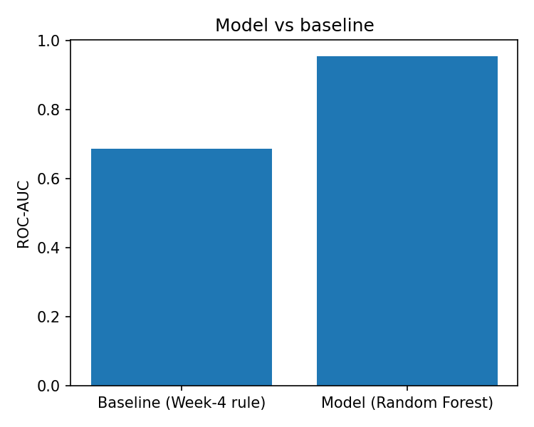
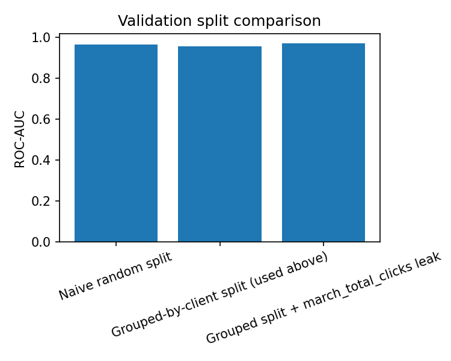
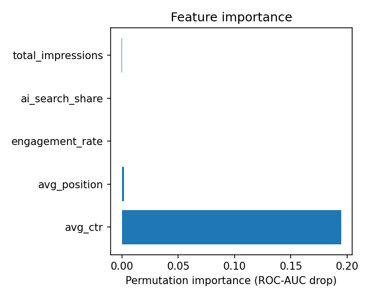
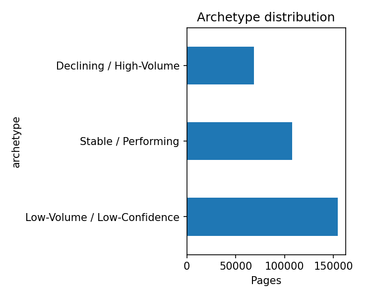

01
REFRESH_CONTENT
DECLINE_RISK_HIGH_VOLUMEPrioritize pages showing elevated predicted decline risk where traffic volume makes human intervention potentially valuable.
Human review required.Can observable search and engagement signals from one month identify webpages likely to experience a decline in organic clicks in the following month?
Client-grouped held-out split
Top-10 model-ranked pages
Week-4 rule-based baseline
Held-out page observations
Which webpages should be prioritized for content refresh in order to maximize the opportunity to protect future organic search performance?
Binary classification: predict whether a webpage's total clicks will decline from March 2026 to April 2026 using only signals observable at the end of March.
The intended decision is a prioritization queue for a content strategist. The model is designed as decision support rather than an automated publishing, rewriting, or deletion system.
This study investigates whether March-only search and engagement signals can identify webpages likely to experience a forward decline in organic clicks, supporting human-reviewed content refresh prioritization. A Random Forest classifier was trained using five March 2026 features and evaluated against a Week-4 rule-based baseline using a client-grouped held-out split. On this March-to-April slice, the model achieved a ROC-AUC of approximately 0.953 and Precision@10 of 1.000, compared with 0.687 and 0.700 for the baseline. Validation and leakage audits showed that naive random splitting produced a higher ROC-AUC of approximately 0.964, while adding March total clicks as a leaky feature produced approximately 0.968, reinforcing the importance of the grouped validation design. The resulting output is a directional decision-support queue for human review, not a causal or automated content-editing system.
Content teams often have more webpages to review than they can realistically inspect manually. A useful prioritization system should therefore distinguish pages that may warrant attention from pages where intervention is unlikely to be valuable.
This study explores whether historical search and engagement signals available at the end of March 2026 can provide an early signal of whether organic clicks will decline in April 2026.
The objective is not to claim that the model can predict search performance universally. Instead, the experiment asks whether the observed signals provide a useful directional ranking on the evaluated March-to-April slice.
FlyRank internship warehouse, using the
fact_content_daily_performance
configuration.
March 1–31, 2026.
April 1–30, 2026.
Client-content page observations with both March and April data available.
Rows without both monthly periods were excluded rather than imputed. Future outcome information was not used as a model feature.
Client identifiers are represented using hashed IDs. Client names, domains, URLs, and private queries are not part of the published analysis.
A webpage is labelled as declining when its total April clicks are lower than its total March clicks:
The primary model is a Random Forest classifier using five March-only features. The model uses 300 trees, a maximum depth of 5, a minimum leaf size of 10, balanced class weighting, and a fixed random seed.
The primary evaluation uses
GroupShuffleSplit by
client_hash_id, with 30% of observations assigned
to the held-out test set.
The same client must not appear on both sides of the evaluation split. This reduces the risk that client-specific patterns make the model appear stronger than it would be on unseen clients.
The comparison baseline is the fixed Week-4 rule-based prioritization score. It ranks pages using within-month click decline weighted by total impressions.
The Random Forest was evaluated against the existing rule-based baseline on the same client-grouped held-out split.

The model's observed ROC-AUC was higher than the baseline on this evaluation slice. This should be interpreted as an observed result rather than a universal performance guarantee.
A central part of the analysis was checking whether the evaluation setup or feature construction could produce an overly optimistic result.

Higher observed score under random splitting.
Primary and more conservative evaluation.
Score after adding March total clicks.
The naive random split produced an ROC-AUC of approximately 0.964, while the client-grouped split produced approximately 0.953. Because the grouped design prevents client overlap between training and evaluation, the grouped result is used as the primary reported model performance.
Adding march_total_clicks produced an ROC-AUC
of approximately 0.968. This feature was deliberately
excluded from the final model because it is structurally
close to the forward decline definition. Keeping it out
prevents the model from exploiting information that would
make the evaluation less meaningful.
Permutation importance was used to examine how much the model's ROC-AUC changed when individual features were shuffled.

These importance values describe the behavior of this fitted model on this evaluation setup. They should not be interpreted as causal effects or universal rankings of SEO importance.
The model is ultimately used to create a prioritization queue, not to automatically modify webpages.
Prioritize pages showing elevated predicted decline risk where traffic volume makes human intervention potentially valuable.
Human review required.Review pages that have relatively favorable search positions but an observed CTR gap compared with peers.
Human review required.Avoid spending disproportionate human effort on pages with insufficient traffic volume.
Pages without a strong intervention signal remain in the monitoring pool rather than being unnecessarily changed.

The system does not automatically publish, rewrite, deindex, delete, or otherwise modify content. Low-volume pages are not treated as equally trustworthy as higher-volume observations.
The analysis is organized as a sequence of notebooks covering data definition, baseline construction, model development, validation, action prioritization, and the final capstone.
Built on the FlyRank ML Internship dataset .
This research artifact was prepared as part of the FlyRank Machine Learning Internship.